a black desert alchemist's quest for profit.
During the past few months, I've become totally addicted to an mmorpg called black desert online. it's a game that has a beautiful world, excellent combat mechanics, diverse character class types, and one of (if not the best) character creation menus I've ever seen in a video game. but the thing I'm most interested in is the game's life skill system.
the life skill system is a set of eleven skills that your character can learn: gathering, alchemy, farming, fishing, processing, sailing, hunting, training, barter, cooking, and trading. each skill involves engaging with deep and complex systems that can take hundreds of hours to truly master. because of this, many people choose one skill to focus on at a time.
my specialty is alchemy! no matter the game, I just love making potions. if I could become an alchemist in real life, the software world would never see me again.

but there was one thing I didn't know when I was just a noob wanting to try black desert's alchemy system...
alchemy is extremely impractical.
like many mmos, black desert has an in-game marketplace where players can sell the items they've crafted or otherwise obtained. as an alchemist, I can create potions and other various magical things to sell on the market for some cash. after reaching a high level of alchemy skill, there are some very lucrative, sought-after items that you can brew up.
unfortunately, the factors that make an alchemy product valuable often are the reason that alchemists don't make them. there are many such items that are extraordinarily high demand with near-zero supply because of the random enemy item drops involved in creating them.
there is a small set of certain ingredients that are required to make the absolute best-in-class potions, elixirs, and perfumes. procuring such items doesn't require skill, scholarly knowledge of alchemy, or extensive experimentation; it just requires a lucky drop. this is a very unfortunate thing, but of course it's much easier for the game developers to just make something random rather than making it actually challenging. I feel that this is less rewarding, but that's just how it is!
I could open black desert right now, ride to tunkuta, kill one enemy, and get the extremely rare and untradeable alchemy items thick turo blood and turo heart. of course, since it's random, I could also slaughter every enemy in sight for hours and come home empty-handed. that doesn't inspire me to try gathering these ingredients.
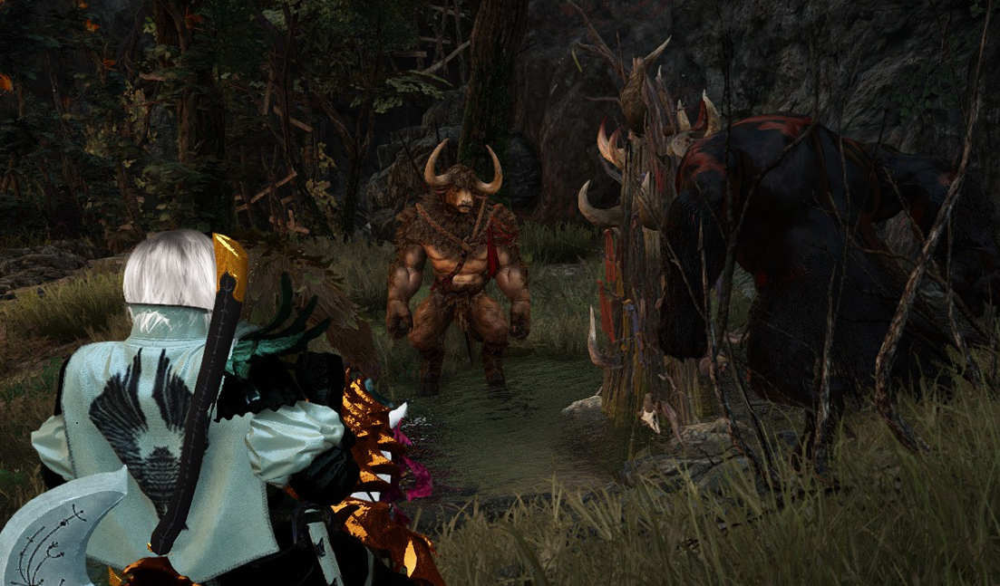
very few alchemists will even be able to brew items that require such rare ingredients on a regular basis. because of that, only a small percentage of players every day will even have the luxury of purchasing and utilising these items.
imperial delivery to the rescue?
there's a system where alchemists can sell packages of potions to certain npcs. this system is called imperial crafting delivery. there are two kinds of imperial crafting delivery: imperial alchemy and imperial cuisine (aka imperial cooking). imperial crafting involves making a bunch of one kind of product—a food dish or a potion—boxing them up, and delivering them to an npc, who will pay you a pre-determined amount of money depending on the contents of the box. very stable, very simple, very few variables involved.
you can also skip actually brewing the potions yourself, and just buy them straight from the in-game market. this practice is very, very common and profitable in imperial alchemy's counterpart, imperial cooking. here's a chart showing the top fourteen most profitable imperial cooking boxes, sorted from highest to lowest profit:
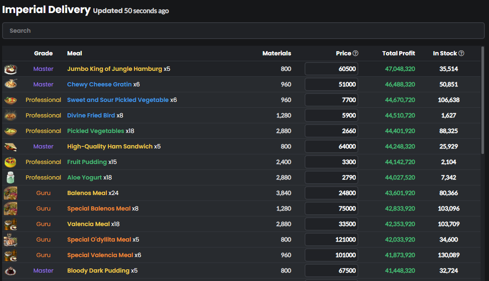
however, this process of purchasing items, packaging them, and then delivering them is not feasible for would-be imperial alchemists. here's a chart showing the top fourteen imperial alchemy boxes, from most profitable (if you could call it that) to least profitable:
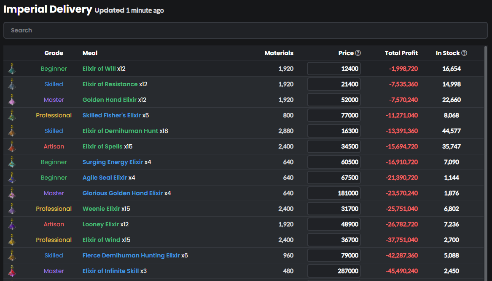
the determining factor here is the availability of ingredients. alchemy products are inherently more difficult to obtain, purely because the developers (pearl abyss) made them rare. this means the price of elixirs is dramatically higher than a food item of equivalent level. here are the five imperial cooking boxes which are cheapest to create:
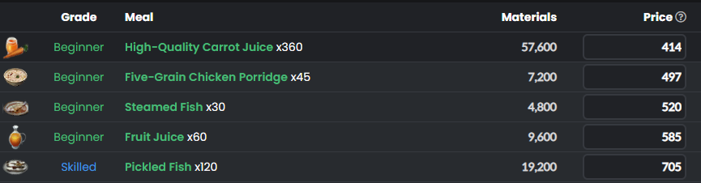
and in stark contrast, here are the five cheapest alchemy boxes you can make:
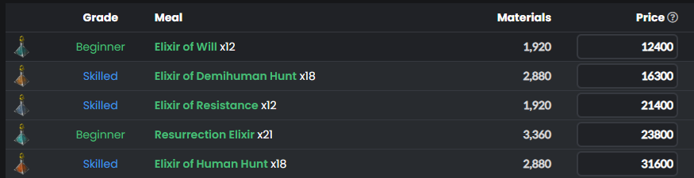
keep in mind that no matter what alchemy box you buy materials for, you will lose some amount of money—in the millions—making no profit at all. with cooking, not making a profit is harder than making a profit.
also, looking at the two images above, note that the alchemy box with the absolute lowest investment is almost thirty times more expensive than the cheapest cooking box.
in that case the imperial delivery lady (I live in grána, so it's mizella for me) will buy the very expensive alchemy products for a higher price than the very cheap cooking products, right?
at least, that would make sense. let's compare the sell prices of the alchemy (medicine) boxes and the cooking boxes.
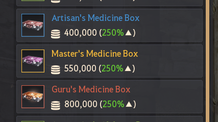 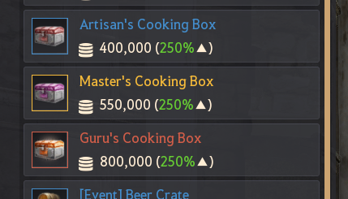nope. they're exactly the same prices. why? I'm actually not sure. maybe mizella just doesn't like alchemists. you basically have to pay to get her to buy medicine boxes.
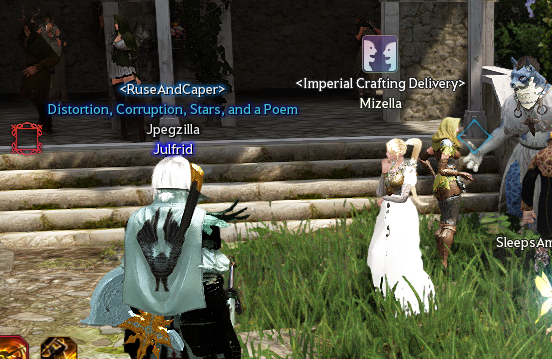
what I really wanted was a way to sell alchemy products and still profit without having to gather tons of rare, randomly appearing ingredients all the time. and without getting ripped off by mizella.
don't get me wrong, I really enjoy the feeling of finally obtaining those items and making some truly high-tier potions, but sometimes waiting for things to randomly happen is boring. what could make this process more predictable and consistent...?
programming to the rescue!
the premise is simple; I want to find out which alchemy products I can make that match these requirements:
1. the ingredients can be bought off the market (no gathering rare items), and
2. the profit is good. actually, I'd settle for decent at this point. well, at least more than zero. ok, fine...more than negative two million.
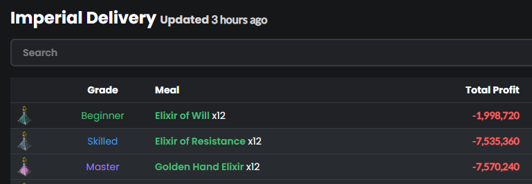
maybe if I were an economist, I could have solved this problem with spreadsheets or something. but I'm a computer programmer, so I shall program my computer to solve this problem for me.
I've created a script called bdo-alchemy-profits (creative name, I know) to help me solve this problem. the process performed by the script is pretty straightforward.
the script will look up a set list of items on the market using the super-secure black desert marketplace api (sarcasm), scrape bdocodex to find the recipes, and then look up the price of ingredients on the market. not too hard, I know what I'm doing...I think.
there is no official (public) black desert market api
communicating with the black desert market proved to be a confusing problem for me. initially, I was trying to use the market api as documented here: https://developers.veliainn.com/. unfortunately, it looks like the api has changed a bit since this was written. that sucks, because this documentation looks like it was a really awesome project. I joined their discord server to see if anyone was working on it, but the server was utterly dead.
so I rolled my own api! I've made a million apis and api wrappers, and it's really fun, but this one was a little different. the black desert marketplace api (I assume) isn't really meant to be used by random people like me. of course, it's used by the game servers to allow players to buy and sell items; but more importantly, it's used by the web and mobile app versions of the marketplace. the web version is here, but you need a black desert character (yes, character, not just an account) to access it at all.
I started my investigation by trying to find out how the web marketplace communicates with the api. if you go to the market and click around with chrome devtools open, you can gather a list of requests to analyze:
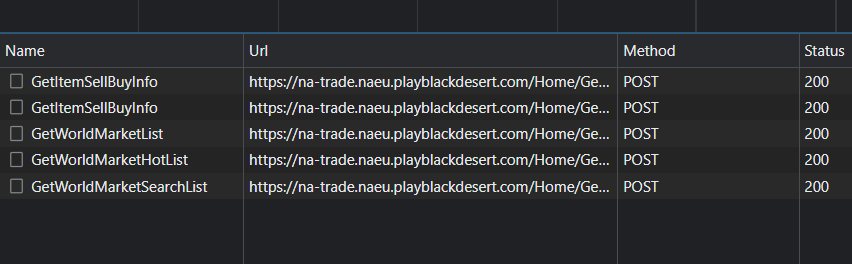the important endpoints are /GetWorldMarketList (used to get a list of items by category), /GetWorldMarketSubList (used to get price data for a specific item), /GetWorldMarketSearchList (used to fuzzy search for items), and /GetItemSellBuyInfo (used to read very detailed information about the price and trade volume of items).
I'll spare you the gory details, but what I found by digging through these is that all you really need is a requestVerificationToken pair to hit the api from whatever you want. I have no idea why this is the only thing securing the api. the damn token doesn't even expire, as far as I can tell. I wasn't able to figure out if someone could do anything malicious if they had my token, but I used an alternate black desert account's token just in case.
the rest of the script goes like this: access the information at these endpoints to secure current data on alchemy product prices, look up product recipes on bdocodex, and then take those ingredients back to the marketplace to look up their current prices. then, it discards the recipe if the ingredients are more expensive than the selling price of the final product. after about twenty minutes, you're left with a comprehensive, detailed list of items that you can craft with ingredients purchased from the market.
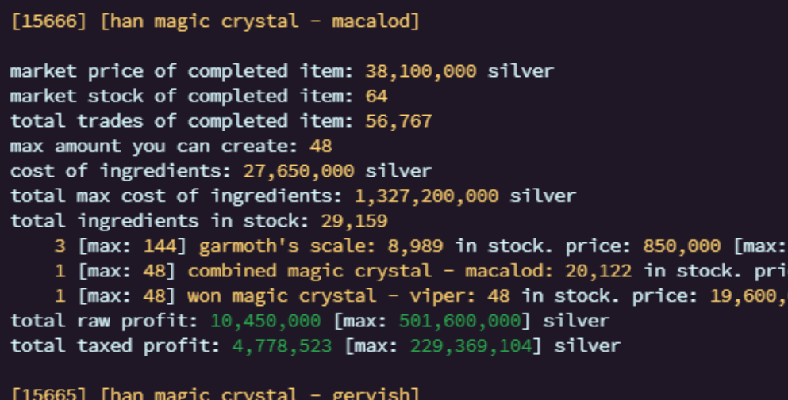there's just one issue with this entire endeavour.
nobody wants to buy this stuff.
not even mizella—whose entire purpose is to buy this stuff—wants to buy this stuff.
a serious issue with profitability in alchemy is that there are like a million items you can brew (big exaggeration). but at high levels, only like ten of them are useful (small exaggeration). that means most alchemy products will take days or even weeks to sell, and some are so useless that they'll never sell at all.
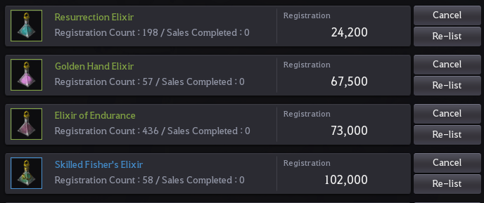
I didn't integrate this "usefulness" information into my script, so the script will even show items that have almost no chance of being bought. an item is listed as long as it sells for more than the cost of its ingredients.
the only real warning sign given by the script is showing the current total stock number of an alchemy item:
thousands in stock: typically low demand or extremely high volume.
low stock between ten and a few hundred: no one wants or makes this / it's for an extremely specific use-case.
totally out of stock: people probably want this, but it requires rare or expensive ingredients.
it's up to the user to do a little research to find out what items are actually useful.
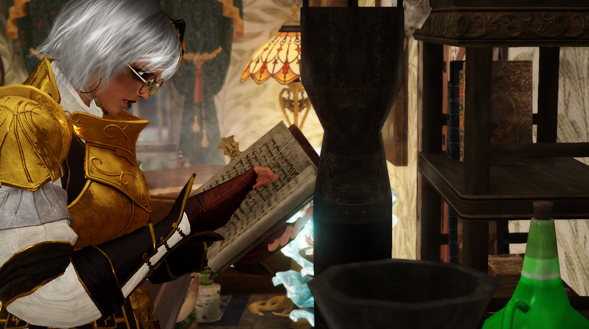a seasoned black desert player will probably just recognize the items which are pointless to try selling.
try as I might, there's really only a couple hundred million silver to be made on a day-to-day basis using this technique (if you're not familiar with the black desert economy, one hundred million silver is equivalent to like, a hundred bucks). however, if there is a huge potential profit that pops up someday, this script will find it and I'll be a rich woman. oh well.
how does one use this script?
if you're still interested, or you just want to snoop in some code, the repository link here will take you to the project on github. if you read the readme.md on that page, it'll give you a brief guide on how to use the script. the readme also contains much more detailed information about what the script can do.
aside from that, I'm also looking at some alternative methods:
can you manipulate the market for profit?
since the alchemy industry is in such a miserable state right now, maybe there's something an individual alchemist—such as myself—can do to make things better. I'm currently running a small-scale experiment as a precursor for an extremely ambitious project which I'll write about later.
this little experiment involves making hundreds of thousands of one very unpopular elixir with inexpensive ingredients. I'll then flood the market with said elixir at the minimum possible price, undercutting everyone else to see if the price falls. in this manner, I can determine if the price of elixirs can be forced down, making imperial alchemy boxes more profitable—all without the developers having to manually change the prices of boxes.
really, I think this won't help me at all, since I can't buy elixirs from myself. but it might make imperial alchemy cheaper for other alchemists!
that said, I'm new to the game, I don't know jack about mmo economies, I have no idea about real-life economics, I don't know if anyone else has already tried this and failed, yada yada yada...but what I do have is an unreasonable amount of confidence and optimism. that's just as good, right...? no? I'm doing it anyway!
in conclusion...
thanks for reading! I currently don't have much better to do while I look for a new programming job, so I'll be back pretty soon with another post. maybe it'll be about black desert shenanigans, maybe it'll be about something else! I've got some interesting project going. if you're interested in these, I have an rss feed linked at the bottom of this page, and my previous blog posts are linked here!
finally, if you want to talk to me, my discord username is jpegzilla#6969, and my twitter username is @jpegzilla. see you later, and enjoy the music recommendations if you want!
currently listening to:
- Day After Day by FreQuency
- Cabinet Man by Lemon Demon
- Leisureforce by Aesop Rock
- family name by METAMUSE / ZOC
- Give me a Break by Math the Band